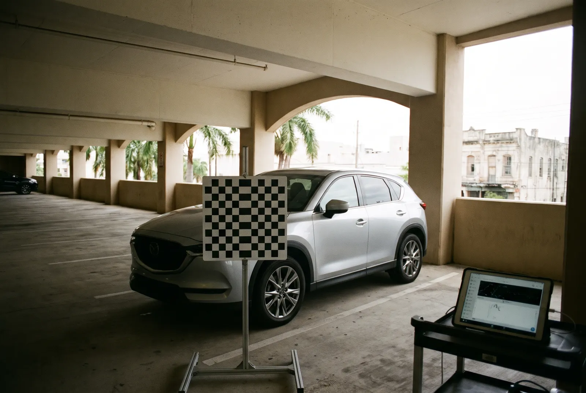

ADAS camera calibration in Miami re-aims the safety camera behind your rearview mirror after a new windshield goes in. Miami Auto Glass Repair handles the windshield and the calibration together, so lane-keep assist, automatic emergency braking and adaptive cruise control see the road the way they were designed to.

There are two kinds of calibration. Static calibration uses a printed target board set at an exact distance and height in front of the vehicle on level ground, and a flat garage floor works well for it, while a scan tool tells the camera to learn its position. Dynamic calibration means driving the vehicle at set speeds on well-marked roads, like I-95 or SR 836, while the camera relearns the lane lines. Many vehicles need one, some need both. Callers often ask, “Is calibration really necessary?” On most vehicles built in the last several years, it is. The scan tool confirms no fault codes are left when it is done.
The camera is mounted to the glass, so new glass means new aim.
Lane-keep or collision warnings that turn off point to a camera problem.
The car nudges toward the line instead of the center.
Automatic braking that triggers with nothing ahead is a classic sign.
Some makers call for calibration after suspension or alignment work.
Bumper and grille work can move radar sensors used with the camera.
The camera is bracketed to the windshield, and a fraction of a degree of difference in the new glass or how it sits in the frame changes where the camera points. Over a hundred feet of road, that small error grows into a big one, so the system reads lanes and cars in the wrong place. Carmakers spell out calibration in their repair procedures for that reason. In a summer downpour on I-95, when lane lines disappear under standing water and traffic stops short, a well-aimed camera matters even more.
The cost of ADAS camera calibration in Miami depends on the vehicle, whether it needs static calibration, dynamic calibration or both, and how many sensors are tied to the camera. When the windshield is replaced under a covered claim and the maker calls for calibration, most insurers include it. Call with your year, make and model and we will check by VIN when we quote. Not sure your car has these systems? Look for a black camera housing behind the rearview mirror.
| Static | Dynamic | |
|---|---|---|
| Where it happens | Level floor with a target board | On marked roads at set speeds |
| Weather | Not affected | Needs clear lane lines and no heavy rain |
| Time | About 30 to 60 minutes | Depends on traffic and road conditions |
| Vehicles | Many Toyota, Honda and Subaru models | Many GM, Ford and Nissan models; some need both |
Calibration is usually part of windshield replacement in Miami, and we quote both together.
If your vehicle has lane-keep assist, lane departure warning, automatic emergency braking or adaptive cruise, and the camera sits behind the rearview mirror, it almost always needs calibration after a new windshield. We check by VIN when we quote.
Most calibrations take 30 minutes to an hour after the windshield is installed. Dynamic calibrations also depend on traffic, rain and road conditions.
The safety systems may work poorly or not at all. Warnings can come late, the car may brake for no reason, or lane-keep can steer you toward the line instead of away from it. Having the car brake hard for nothing on the Palmetto is scary.
When the windshield is replaced under a covered claim and the vehicle requires calibration, most insurers include it. We confirm with your insurer before the work.
Call for a free quote on windshield replacement with ADAS calibration in Miami.
Call (786) 917-3712 Now